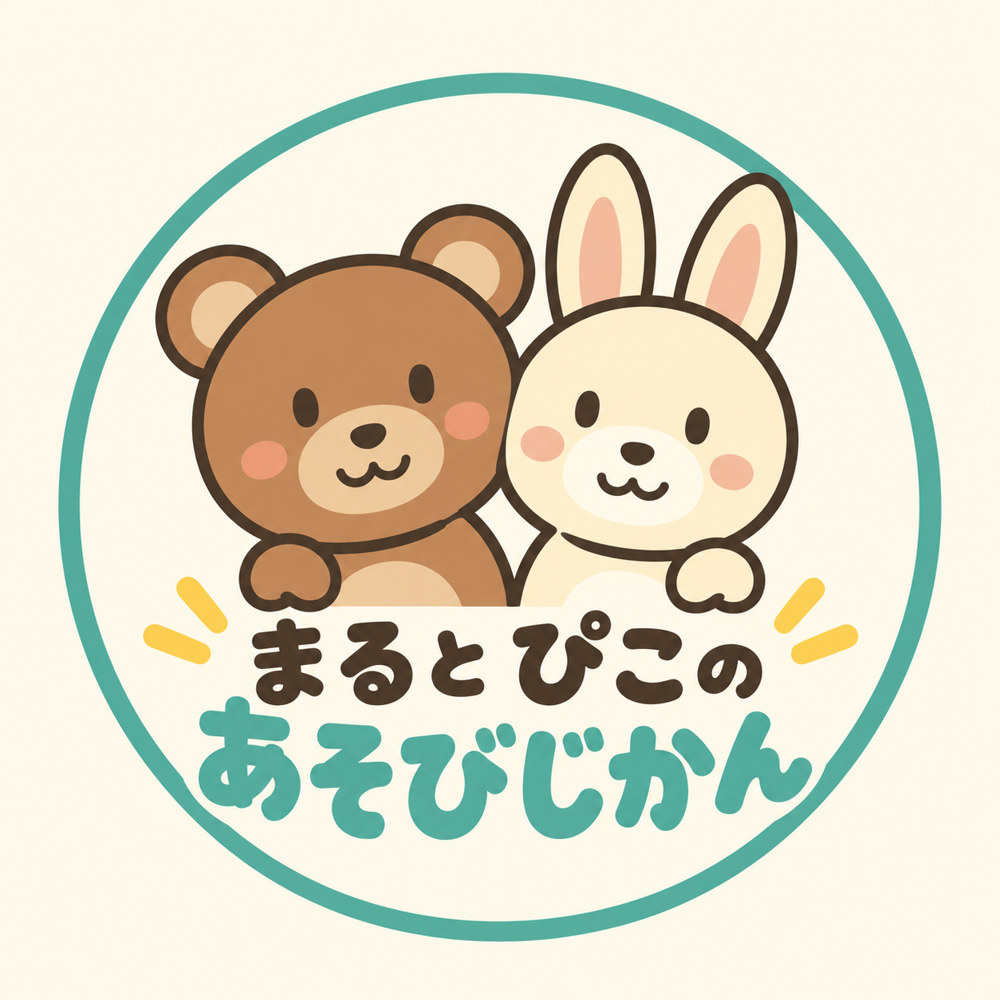

まると ぴこの あそびじかん
できあがった動画を、
決めた時間に。
「まるぴこ」は、チャンネル運営者が自分の動画をYouTubeへ投稿し、公開予約を管理するための個人用デスクトップツールです。
ツールのしくみを見る
HOW IT WORKS
確認して、送って、予約する。
完成動画を確認
動画形式・長さ・音声・重複を検査し、完成した順に投稿キューへ登録します。
まず非公開で送信
YouTube Data APIを使用し、動画・タイトル・説明文・タグと「子ども向け」の設定を送信します。
公開時刻を設定
投稿先と動画IDを確認してから、運営者が設定した日時に公開されるよう予約します。
ABOUT THE CHANNEL
まるとぴこと、
いっしょに考える時間。
「まると ぴこの あそびじかん」では、3歳前後を想定した日本語の知育クイズ、間違い探し、短編アニメを制作しています。
投稿ツールを操作するのは成人の運営者です。視聴するお子さまのGoogleアカウントや個人情報は、このツールでは取得しません。
GOOGLE AUTHORIZATION
認証で許可すること。
このツールは、認証した運営者自身のチャンネル情報と投稿動画の状態を確認し、動画のアップロード・メタデータ登録・公開予約を行います。認証情報と投稿履歴は運営者のPCに保存し、この説明サイトには送信しません。
使用する権限は youtube.force-ssl です。このGoogleの権限には動画・評価・コメント等の管理も含まれますが、現行ツールは動画削除・評価・コメント操作を実装していません。詳しい取得情報、保存方法、アクセス解除についてはプライバシーポリシーをご確認ください。
本ツールはGoogleまたはYouTubeの公式製品ではありません。Googleによる確認・承認の取得を示すサイトではありません。
お問い合わせ
運営：まると ぴこの あそびじかん 運営者
認証コード、パスワード、アクセストークンは送らないでください。